Universidad Nacional de Loja
Facultad de la Energía, las Industrias y los Recursos Naturales No Renovables · Ingeniería en Ciencias de la Computación
Contexto Depender de la nube comercial y de servidores tradicionales es una barrera de costo para universidades y entornos con pocos recursos.
Pregunta de investigación ¿Cuál es el tiempo de respuesta y la cantidad de peticiones por segundo de un clúster con Kubernetes para aplicaciones web, al someterlo a una carga en una arquitectura de bajo costo?
Limitación Equipos de poca capacidad, sobre todo en red: en la Raspberry Pi 3 la red pasa por el puerto USB.
Alternativa Un clúster de Raspberry Pi con una versión ligera de Kubernetes: económico y reproducible.
Vacío Poca evidencia real de su rendimiento bajo carga y de qué lo limita.
Clúster — varias computadoras que trabajan juntas como si fueran una sola.
Kubernetes y K3s — coordinan las aplicaciones; K3s es la versión ligera para equipos pequeños.
Maestro y trabajadores — el maestro coordina; los trabajadores ejecutan las aplicaciones.
Latencia y throughput — el tiempo de respuesta y las peticiones por segundo: las métricas del estudio.
Freno por calor — a 80–85 °C el equipo baja la velocidad del procesador para protegerse.
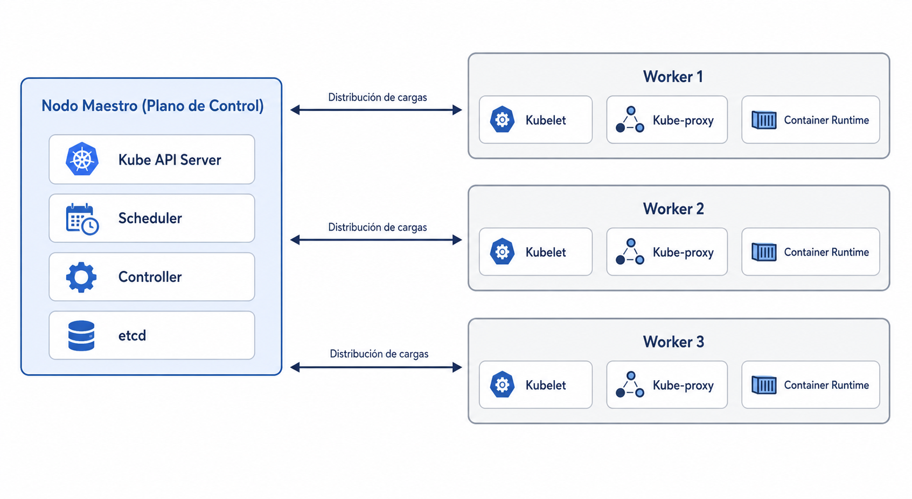
Medir el nivel de latencia y throughput que presenta un clúster orquestado con Kubernetes para el despliegue de aplicaciones web contenerizadas, al someterse a una simulación de carga en una arquitectura de bajo costo.
Construir el prototipo físico del clúster de bajo costo, abarcando desde el diseño de la topología de red hasta la instalación y configuración base del sistema operativo en los nodos, para garantizar una base estable y funcional al momento de la orquestación con Kubernetes.
Orquestar el despliegue de aplicaciones web en el clúster mediante Kubernetes, sometiendo el sistema a simulaciones de carga para registrar las métricas de latencia y throughput.
01
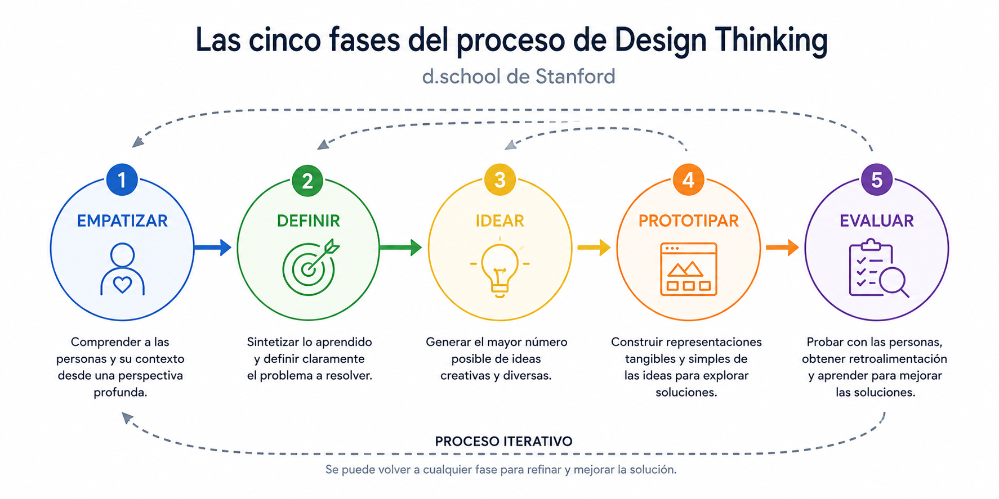
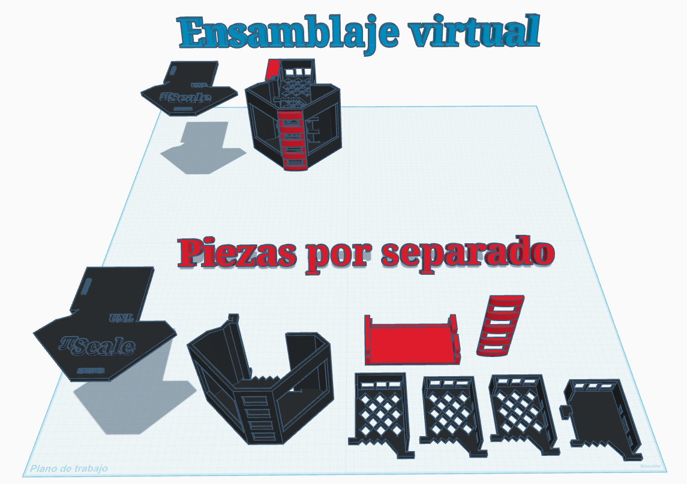
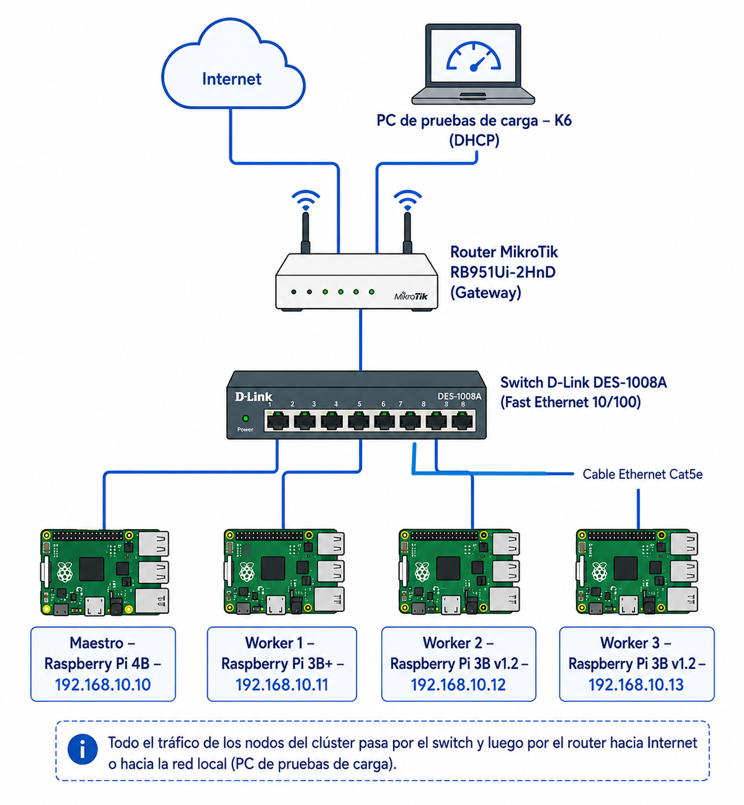
Todos los comandos
Escanea el código o visita:
github.com/eval-cluster/cluster
# Bloquear versiones del núcleo y firmware
sudo apt-mark hold linux-image-raspi \
linux-headers-raspi linux-raspi linux-firmware
# Instalar K3s en el nodo maestro (sin Traefik)
curl -sfL https://get.k3s.io | sh -s - --disable traefik
# Unir un trabajador al clúster
curl -sfL https://get.k3s.io | \
K3S_URL=https://192.168.10.10:6443 \
K3S_TOKEN=<token> sh - Diseño 3D del clúster
Escanea el código o visita:
tinkercad.com/things/cluster-4-raspberrypi
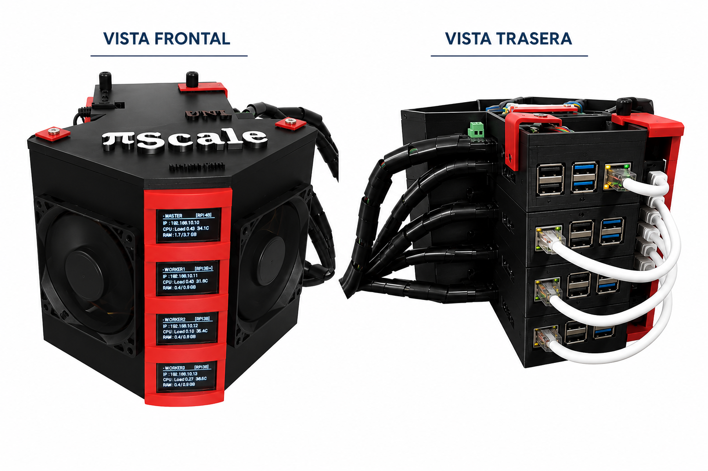
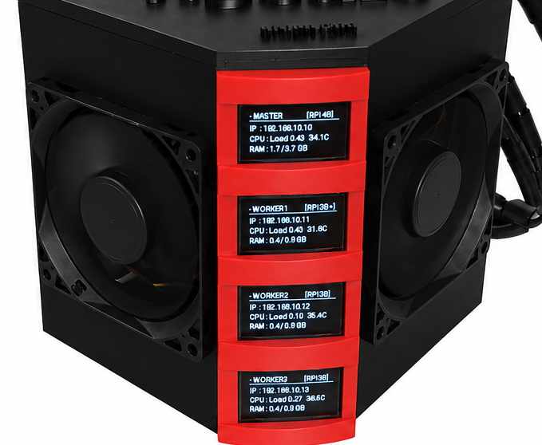
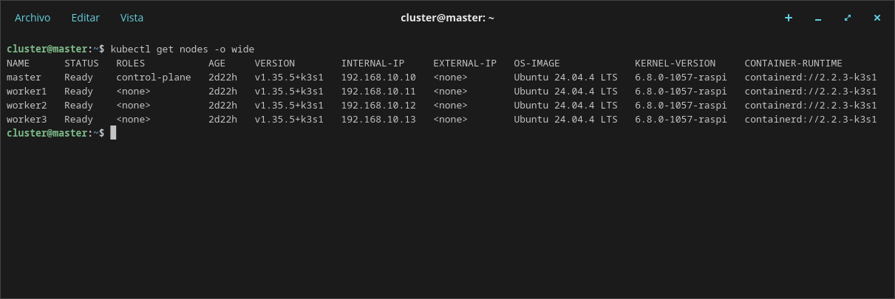
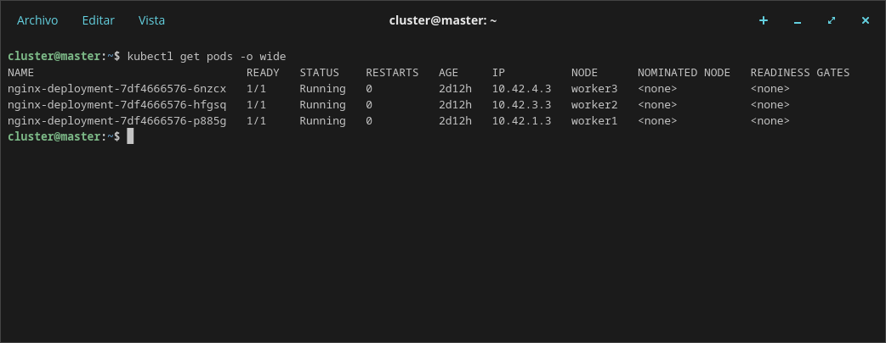
02
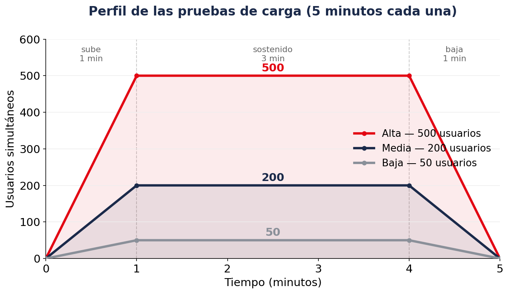
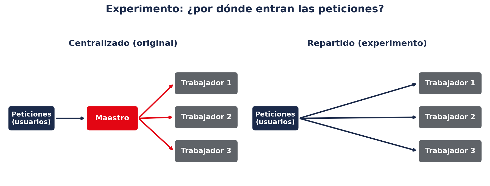
Experimento extra: en lugar de enviar todo al maestro, se reparten las peticiones entre los trabajadores.
Si repartir mejora mucho → el problema era la concentración en el maestro.
Si no mejora → el problema está en la red de los trabajadores.
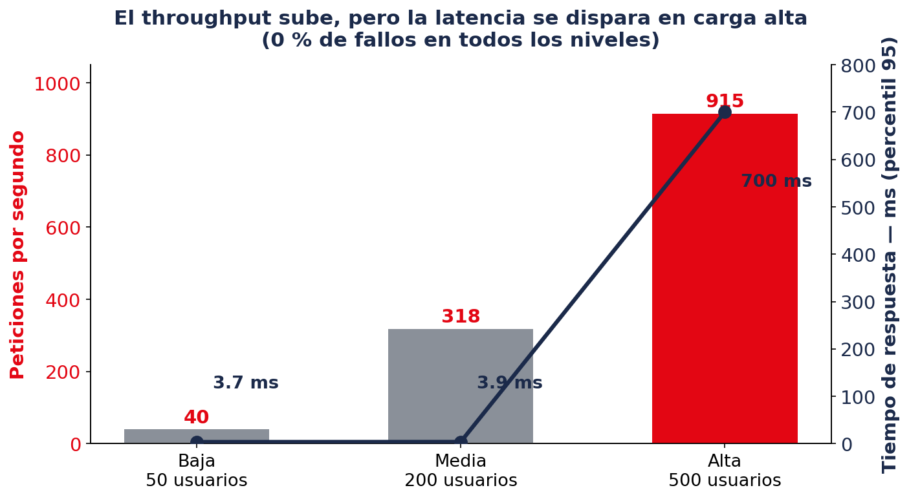
Responde bien hasta 200 usuarios y se satura en 500 — más lento, pero sin un solo fallo.
La temperatura no limita el rendimiento web, porque el procesador nunca trabaja al límite.
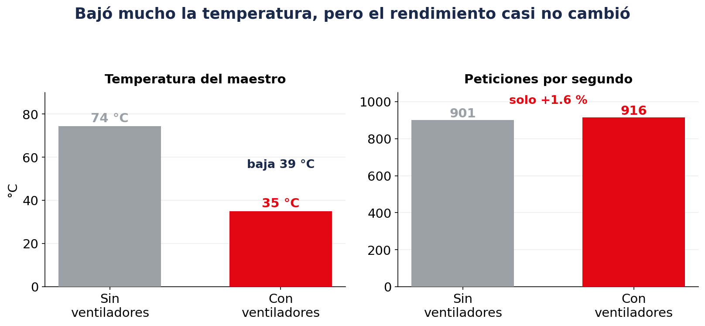
Ni el procesador ni la red están saturados: el problema no es la potencia, sino la espera.
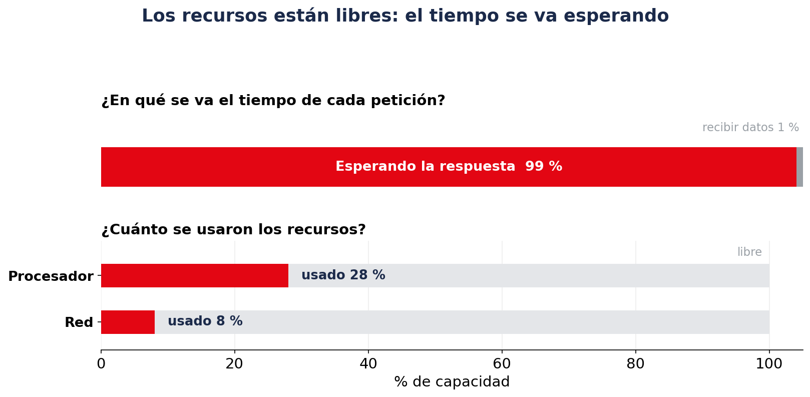
No era la concentración en el maestro: el throughput casi no cambió y la respuesta se volvió más irregular. Cada trabajador recibe el tráfico por su propia conexión (puerto USB), igual de limitada.
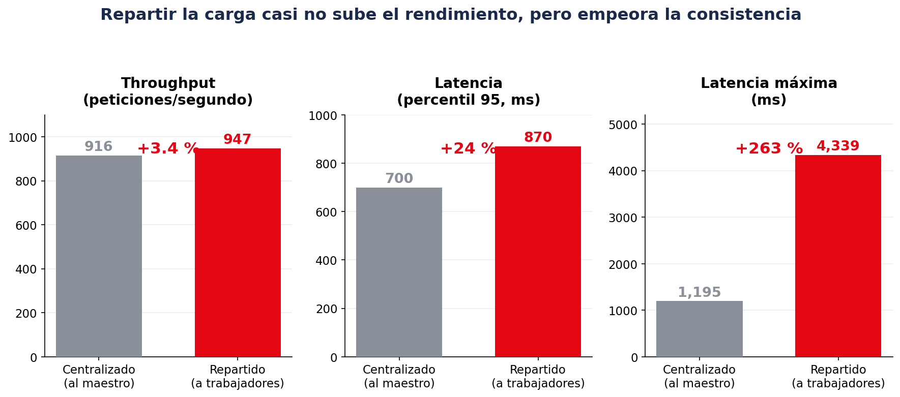
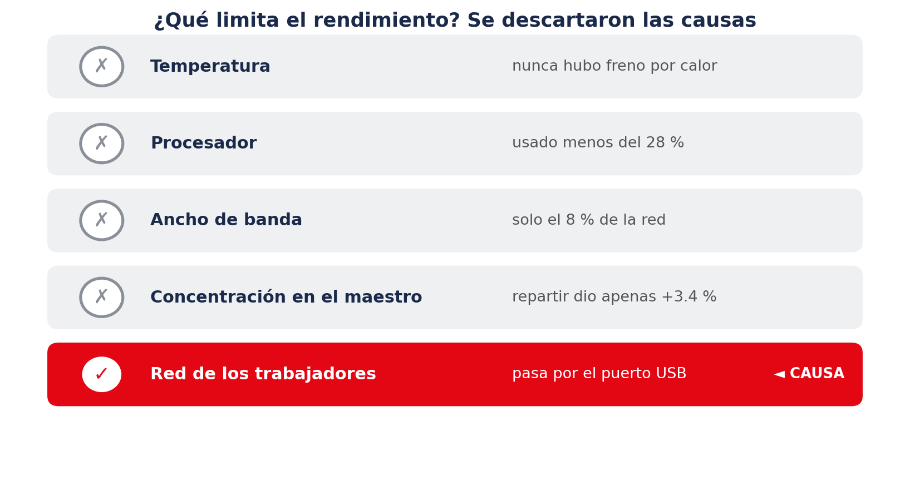
Lo que limita el rendimiento es la red de los nodos trabajadores: en la Raspberry Pi 3 la conexión pasa por el puerto USB, y eso hace lento el manejo de cada petición.
03
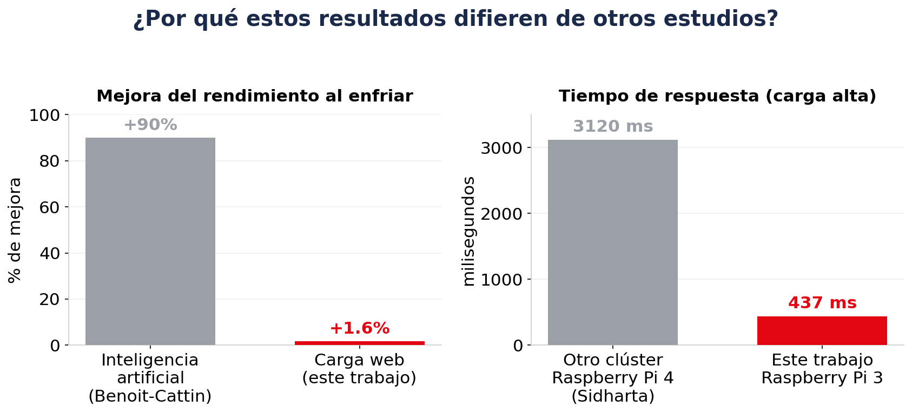
El freno por calor solo aparece con tareas que exigen mucho al procesador. Una carga web no lo hace: por eso enfriar no mejora el rendimiento.
04
¿Cuál es el nivel de latencia y throughput que presenta un clúster orquestado con Kubernetes para el despliegue de aplicaciones web contenerizadas, al someterse a una simulación de carga en una arquitectura de bajo costo?
Sí, el clúster es viable para desplegar aplicaciones web de bajo costo: alcanzó ese nivel de throughput y latencia atendiendo toda la carga sin un solo fallo. Su límite está en la red, no en el cómputo ni en la temperatura.
Objetivo general — cumplido
Objetivo específico 1 — cumplido
Objetivo específico 2 — cumplido
Diego Oswaldo Márquez Paccha — Universidad Nacional de Loja